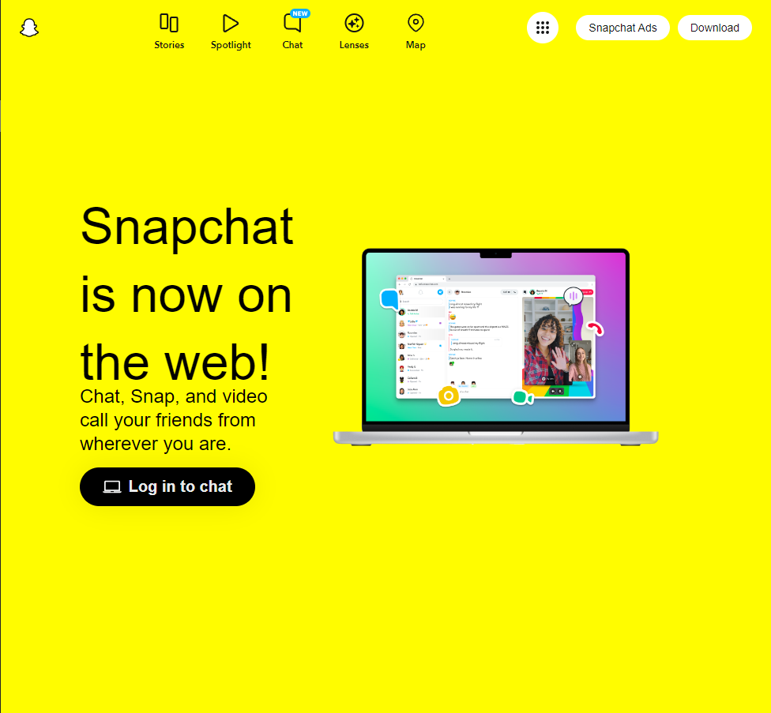
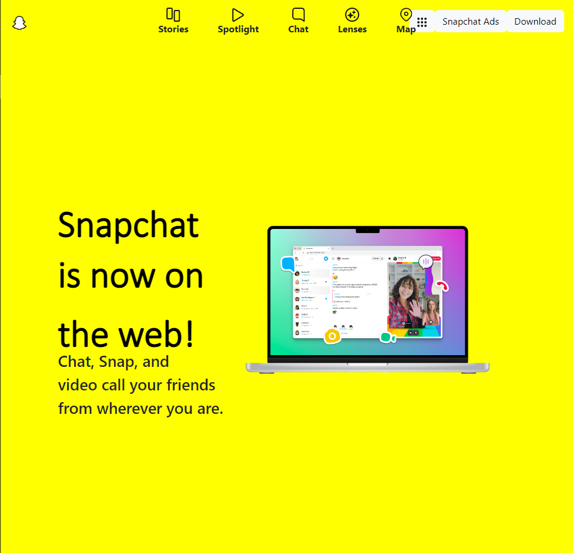

I really had no previous experience with UI Frameworks prior to this week, and I wish I had! Going from Javascript and jumping into Bootstrap 5 is as polarizing as learning a new programming language. You have to shift your entire approach and tackle it in different ways, I found. You can spend hours literally wondering why your img isn’t centered and it WILL drive you insane. With Javascript, at least, I ususally understood why my code was wrong. In Bootstrap 5, however, I’d run into situations where I’d feel like my webpage should look a certain way but simply refuses to cooperate. Of course, I’d always remedy the problem, but it was still frustrating nonetheless.
It’s easy to say “Hey Cash, make a dropdown menu and left align this jpeg,” but you will learn the implications of actually doing it. It “should” be easy to center 4-5 icons on a navigation bar and have text under each icon, but sadly we don’t live in that world. This is precisely what I had to do for my assignment. You’ll see in the images above that I chose to replicate the Snapchat home page, relatively simple in appearance (the left picture). The picture aside it is my replication. In my head, I had an idea of how I’d get through each section. But then I realized that I had to figure out how to download their proprietary icons that aren’t generic enough to be found in Bootstrap. Then I had to figure out why they weren’t centering. But lastly, I had to figure out how to put labels underneath each icon. That alone took up several hours. Instantly, I realized I needed at least another 4 hours to make my replication pixel perfect.
It’s interesting how I see every website now that I only have a week of experience working with UI frameworks. I may only know how to make a navbar, a footer and import imgs, but I started to realized how many websites are composed of just these elements and then some. While learning about CSS and HTML is a complicated matter, in a way it demystified what I knew about many of the websites I visit everyday. I have no regrets from this week and am honestly grateful for being able to learn about UI frameworks. As with most topics covered in 311, the learning material was difficult, yet the knowledge you gain is all very practical in nature.